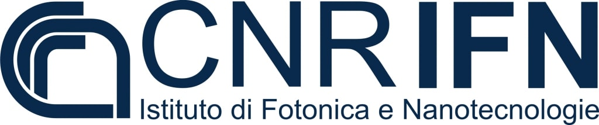

Organizers
The Young Scientist Symposium is organized by PhD Students and Postdocs within the Attochem Cost Action
- Gabriele Crippa (Politecnico di Milano, Italy)
- Hristina S. Delibašić (University of Kragujevac, Serbia)
- Torsha Moitra (Technical University of Denmark, Denmark)
- Juan José Omiste Romero (Universidad Complutense de Madrid, Spain)
- Tomislav Piteša (Ruđer Bošković Institute, Croatia)
- Vincent Wanie (CFEL, Germany)
Local institution:
